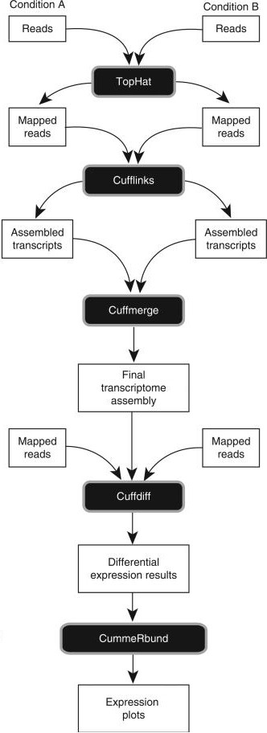
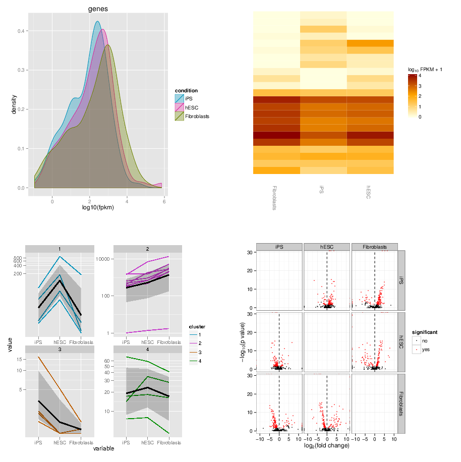

Visualization of RNA-Seq results with CummeRbund
Contributors
 Andrea Bagnacani
Andrea Bagnacani
Questions
How are RNA-Seq results stored?
Why are visualization techniques needed?
How to select our desired subjects for differential gene expression analysis?
Objectives
Manage RNA-Seq results
Extract the desired subject for differential gene expression analysis
Visualize information
Why visualization?
Speaker Notes Data alone does not bring any information: to carry information, data needs to be contextualized. Transcriptomic data is no exception, therefore to organize the growing body of knowledge pertaining RNA-Seq experiments and infer valuable insights, data needs to be organized, annotated, and ultimately visualized.
Where is my data coming from?
Wang et al, Nat Rev Genet, 2009
Speaker Notes
- RNAs are converted into cDNA fragments through RNA fragmentation
- sequencing adaptors (in blue) are then added to each cDNA fragment
- cDNA sequences are obtained via NGS sequencing
- the obtained reads are subsequently aligned against a reference genome or transcriptome, and classified in-silico as exonic reads, junction reads, and poly-A reads
- these three types are then used to outline an expression profile for each gene
This is the process that will:
- reveal new genes and splice variants
- help quantifying cell-specific gene expression within the genome under study
But once this pipeline is implemented, how are sequence data going to be analysed and managed?
Bioinformatic tools for RNA-Seq analysis
Once the RNA-Seq pipeline is implemented, we still need to handle and analyse all data that is generated. This requires:
-
computer science skills to be handled
-
mathematical knowledge to be interpreted
Bioinformatic tools for RNA-Seq analysis

Trapnell et al, Nat Protoc, 2012 Speaker Notes
- first, reads from each condition are mapped to the reference genome using TopHat
- the resulting alignment files are given to Cufflinks, which generates a transcriptome assembly for each condition
- the two assemblies are then merged together to provides a uniform basis for calculating of gene and transcript expression in each condition
- both reads and merged assemblies are fed to CuffDiff, to calculate expression levels via statistical significance test for the observed changes
Bioinformatic tools for RNA-Seq analysis
The last step in our RNA-Seq analysis is CuffDiff. Its output comprises multiple files containing the results of the differential expression analysis.
-
Gene expression levels are reported as tab-separated values: a simple tabular output that can be viewed with any spreadsheet application. Such files contain statistics, gene-related, and transcript-related attributes .image-75[
 ]
] -
Another way to collect all these data is to organize it within a dedicated database for later consultation. CuffDiff can be instructed to do so .image-50[
 ]
]
Speaker Notes
- CuffDiff provides analyses of differential expression and regulation at the gene and transcript level
- its results are reported in a tab separated format
- the overall collection of data is difficult to read to obtain a bird’s-eye view of the change of expression
- the data can be organized in a SQLite database
Bioinformatic tools for RNA-Seq analysis
Whatever storage strategy you opted for, i.e. multiple tab-separated-value files or a SQLite database, all data is still retained within text format.
We need to have a bird’s-eye view of that data, and make sense of it
Visualization
CummeRbund
CummeRbund is an R package for visualizing the results of a CuffDiff output.
-
Manages, integrates, and visualizes all data produced by CuffDiff
-
Simplifies data exploration
-
Provides a bird’s-eye view of the expression analysis
-
Helps creating publication-ready plots
CummeRbund
CummeRbund needs to be instructed on which data to be visualized:
-
Extract CuffDiff’s “Transcript differential expression testing” table
-
Filter the table on the column storing the significance of a differentially expressed gene
-
Sort all entries on the basis of most significant differentially expressed gene
-
Identify the most significant differentially expressed gene
CummeRbund
Once the most significant differentially expressed gene has been identified, CummeRbund can generate publication-ready plots to highlight…
.image-50[ ]
]
The expression of all isoforms of the single gene with replicate FPKMs
CummeRbund
Once the most significant differentially expressed gene has been identified, CummeRbund can generate publication-ready plots to highlight…
.image-50[ ]
]
The expression bar-plot of all isoforms of a gene with replicate FPKMs
CummeRbund
…and many more
.image-50[]
Have a look at CummerBund’s tutorial to overview all possibilities!
Key Points
- Extract informations from a SQLite CuffDiff database
- Filter and sort results to highlight differential expressed genes of interest
- Generate publication-ready visualizations for RNA-Seq analysis results
Thank you!
This material is the result of a collaborative work. Thanks to the Galaxy Training Network and all the contributors! This material is licensed under the Creative Commons Attribution 4.0 International License.
This material is licensed under the Creative Commons Attribution 4.0 International License.